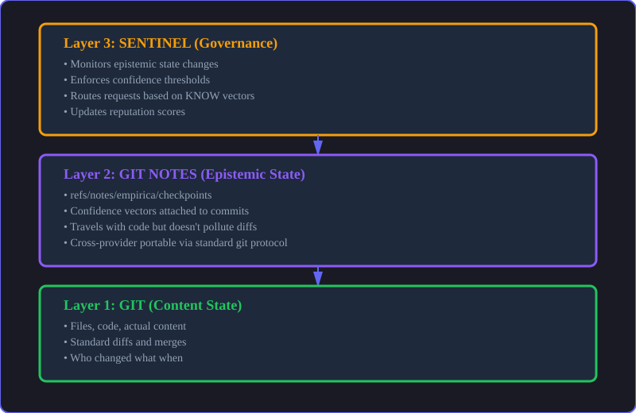
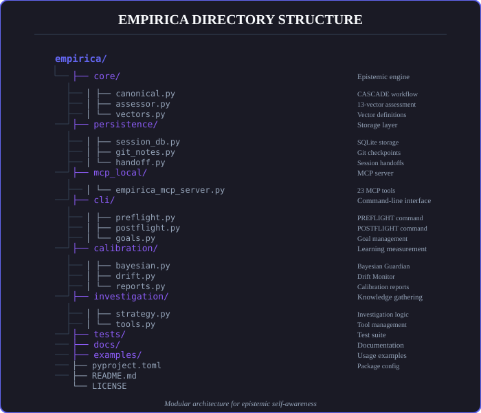

This document provides a comprehensive overview of Empirica's architecture, design principles, and implementation patterns. It's designed for developers who want to understand how the system works under the hood.
System Architecture Overview
Empirica is built on a four-layer conceptual architecture designed for modularity, extensibility, and genuine epistemic reasoning:
Logical Layers (Conceptual): 1. User Interaction Layer - CLI, MCP Server, Dashboard (real-time monitoring) 2. Epistemic Framework Layer - Canonical Assessment (13 vectors), CASCADE Workflow (7 phases), Profile System 3. Investigation System Layer - Domain strategies, Plugin system, Tool recommendations 4. Persistence Layer - SQLite database, JSON sessions, Reflex logs, Git notes
These layers communicate through well-defined interfaces. See the technical architecture below for how these map to actual implementation.
🖥️ User Interaction Layer
The Interface Layer
This layer provides multiple ways to interact with Empirica's epistemic capabilities.
CLI (Command-Line Interface)
50+ commands for direct control, automation, and scripting. Ideal for CI/CD integration and power users.
MCP Server
23 tools exposed via Model Context Protocol for IDE integration. Works with Claude Desktop, Cursor, Windsurf, Antigravity, and any MCP-compatible environment.
Dashboard
Real-time tmux-based visualization of epistemic state, CASCADE phases, and investigation progress.
🧠 Epistemic Framework Layer
The Core Logic
This is where genuine epistemic reasoning happens.
Canonical Assessment
13-vector system with genuine LLM-powered self-assessment. No heuristics, no keyword matching—real reasoning about knowledge state.
CASCADE Workflow
7-phase process (PREFLIGHT → THINK → PLAN → INVESTIGATE → CHECK → ACT → POSTFLIGHT) with automatic investigation loops based on uncertainty thresholds.
Profile System
Context-aware constraints that adapt to AI capability and domain requirements. Different profiles for high-reasoning models vs autonomous agents vs critical domains.
🔬 Investigation System Layer
Domain-Specific Intelligence
Provides targeted investigation strategies based on domain and epistemic gaps.
Domain Strategies
Pre-built investigation approaches for code analysis, research, creative work, security analysis, and more.
Plugin System
User-provided investigation tools that extend Empirica's capabilities for specific domains.
Tool Recommendations
Profile-driven suggestions for which tools to use based on current epistemic state.
💾 Persistence Layer
The Memory
Multiple storage mechanisms for different use cases.
SQLite Database
Queryable, relational tracking of sessions, goals, subtasks, and epistemic snapshots. Ideal for analysis and reporting.
JSON Sessions
Portable, exportable session data for sharing and archiving.
Reflex Logs
Temporal separation of current vs historical reasoning to prevent self-referential loops.
Git Notes
Version-controlled checkpoints (~450 tokens) that preserve epistemic state in your git repository.
Architecture Diagrams

Sentinel (Governance) → Git Notes (Epistemic State) → Git (Content)
Empirica's modular architecture and file organizationCore Design Principles
1. No Heuristics Principle
Empirica does not use heuristics to simulate AI self-awareness.
This is a fundamental design choice that distinguishes Empirica from other approaches.
❌ What Empirica Avoids:
# WRONG - Keyword matching
if 'refactor' in task:
domain = 'code_analysis'
know = 0.7 # Fake confidence
# WRONG - Hardcoded confidence boosts
confidence += 0.15 * tools_used # Not genuine learning
# WRONG - Simulated learning
know_after = know_before + (rounds * 0.05) # Fake growth
✅ What Empirica Does:
# Genuine LLM self-assessment
assessment = await assessor.assess(
task="Refactor authentication system",
context={"cwd": "/project", "domain": "security"}
)
# LLM genuinely reasons:
# "I understand authentication patterns (know: 0.7)
# but I'm uncertain about this specific codebase (uncertainty: 0.6)
# and I don't know the current implementation (context: 0.4).
# I need to investigate before proceeding."
Why This Matters: - Real reasoning about knowledge state - Handles novel situations outside training data - Honest uncertainty acknowledgment - Genuine learning measurement through deltas
2. Temporal Separation
Reflex logs separate current reasoning from historical reasoning.
This prevents self-referential loops and confabulation.
Problem: Self-referential recursion
# WRONG - Circular reference
assessment = assess(task, context={
'previous_assessment': current_assessment # ❌ Self-referential!
})
Solution: Temporal separation
# RIGHT - Past reasoning only
assessment = assess(task, context={
'reflex_logs': load_historical_logs() # ✅ Historical context
})
Benefits: - Prevents confabulation from circular reasoning - AI can reflect on past decisions without loops - Clear separation of current vs historical state - Enables genuine meta-reasoning about past performance
3. Context-Aware Constraints
Investigation constraints adapt to AI capability and domain.
Different AI models and domains require different constraints:
High Reasoning Models (Claude Opus, GPT-4, o1):
→ high_reasoning_collaborative profile
→ Unlimited investigation rounds
→ Maximum autonomy
Autonomous Agents (GPT-3.5, Claude Haiku):
→ autonomous_agent profile
→ Max 5 investigation rounds
→ Structured guidance
Critical Domains (Medical, Legal, Financial):
→ critical_domain profile
→ Max 3 investigation rounds
→ Strict compliance rules
Why Adaptive: - Right constraints for right context - No artificial limitations on capable models - Appropriate guidance per capability level - Domain-specific safety guardrails
4. Genuine Calibration
Track how well AI predictions match reality.
Calibration measures the accuracy of the AI's self-assessment by comparing PREFLIGHT predictions against POSTFLIGHT reality.
Example:
PREFLIGHT Assessment:
KNOW: 0.40 (predicted low knowledge)
UNCERTAINTY: 0.70 (predicted high uncertainty)
Confidence to proceed: 0.35 (low)
... investigation and work ...
POSTFLIGHT Assessment:
KNOW: 0.85 (actual knowledge gained)
UNCERTAINTY: 0.20 (actual uncertainty reduced)
Task completed successfully
Calibration Score: 0.92
→ The AI accurately predicted it needed investigation
This creates a feedback loop for improving self-assessment accuracy over time.
Canonical Directory Structure
empirica/
├── empirica/ # Core Python package
│ ├── core/
│ │ ├── canonical/ # Epistemic Framework
│ │ │ ├── assessor.py # 13-vector assessment
│ │ │ ├── cascade.py # CASCADE workflow
│ │ │ └── profiles.py # Context-aware constraints
│ │ ├── metacognitive_cascade/ # Workflow Orchestrator
│ │ │ ├── orchestrator.py # Phase management
│ │ │ └── investigation.py # Investigation loop
│ │ └── persistence/ # Storage layer
│ │ ├── session_db.py # SQLite operations
│ │ ├── git_notes.py # Git integration
│ │ └── reflex_logger.py # Temporal separation
│ ├── config/ # Profiles and settings
│ │ ├── profiles/ # Profile definitions
│ │ └── thresholds/ # Domain-specific thresholds
│ ├── mcp_local/ # MCP Server
│ │ └── empirica_mcp_server.py # 23 MCP tools
│ ├── cli/ # CLI interface
│ │ └── commands/ # 50+ commands
│ └── dashboard/ # tmux dashboard
├── docs/ # Documentation
│ ├── reference/ # API reference
│ └── guides/ # User guides
└── .empirica/ # Runtime data (gitignored)
├── sessions/ # Active sessions
├── reflex_logs/ # Historical reasoning
└── checkpoints/ # Git notes cache
Data Flow
Session Lifecycle
1. BOOTSTRAP
↓
Create session in SQLite
Initialize reflex logs
Load profile constraints
2. PREFLIGHT
↓
Assess 13 vectors
Record baseline state
Check ENGAGEMENT gate
3. INVESTIGATE (if needed)
↓
Execute domain strategies
Track epistemic changes
Update reflex logs
4. CHECK
↓
Re-assess vectors
Compare to thresholds
Decide: proceed or investigate more
5. ACT
↓
Execute task
Track changes
Monitor drift
6. POSTFLIGHT
↓
Final vector assessment
Calculate epistemic delta
Measure calibration
7. HANDOFF (optional)
↓
Generate ~400 token summary
Store in git notes
Enable session resumption
Integration Points
CLI Integration
# Direct command execution
empirica preflight "Analyze codebase"
# Scripting and automation
empirica bootstrap --ai-id=ci-bot --level=2
empirica preflight --session-id=latest --prompt="Run tests"
MCP Integration
# AI assistant calls MCP tools
bootstrap_session(ai_id="claude", session_type="development")
execute_preflight(session_id="latest", prompt="Debug auth issue")
Python API Integration
from empirica import CanonicalEpistemicCascade
cascade = CanonicalEpistemicCascade(
agent_id="security-bot",
enable_bayesian=True
)
result = await cascade.run_epistemic_cascade(
task="Security audit",
context={"domain": "security"}
)
Performance Characteristics
Token Efficiency
- Git Checkpoints: ~450 tokens (full epistemic state)
- Handoff Reports: ~400 tokens (98% context preservation)
- Reflex Logs: Compressed historical reasoning
- Session Summaries: ~200 tokens (high-level overview)
Storage Requirements
- SQLite Database: ~1-5 MB per 100 sessions
- JSON Sessions: ~10-50 KB per session
- Reflex Logs: ~5-20 KB per session
- Git Notes: ~1 KB per checkpoint
Latency
- Assessment: 2-5 seconds (LLM-dependent)
- Database Operations: <10ms
- Git Operations: <100ms
- Dashboard Updates: Real-time (<50ms)
Best Practices
For System Designers
- Choose the Right Profile: Match profile to AI capability and domain
- Enable Appropriate Features: Not all features needed for all use cases
- Monitor Calibration: Track self-assessment accuracy over time
- Use Git Integration: Leverage version control for epistemic state
For Developers
- Respect Temporal Separation: Don't mix current and historical state
- Trust the Framework: Let CASCADE guide investigation, don't force it
- Measure, Don't Guess: Use epistemic deltas to validate learning
- Preserve Context: Use handoffs for multi-session work
Next Steps: - CLI Interface - Complete command reference - API Reference - Python API documentation - Components - Enterprise component details - Collaboration - Multi-AI patterns